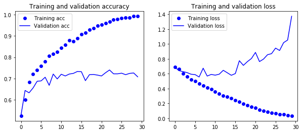
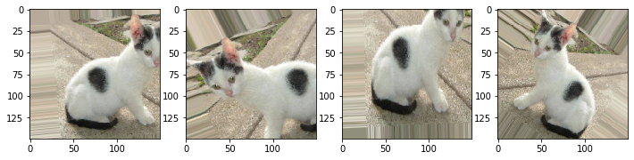
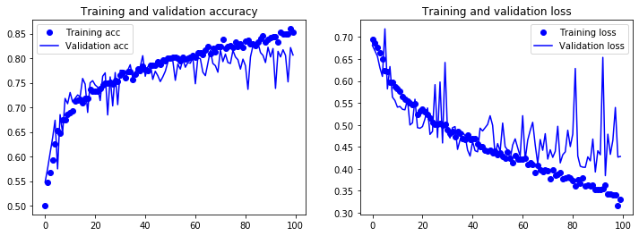

Cats v.s. Dogs CNN分类
Boylad · 2019-11-30
用Kaggle竞赛的Dogs vs. Cats原始数据集中包含25000张猫狗图像(各12500张)。下载解压后，创建一个包含三个子集(train、validation、test)的新数据集(cats_and_dogs_small)：训练集每类图片各1000张，验证集每类图片各500张，测试集每类图片也是各500张。
import os, shutil
original_dataset_dir = 'kaggle_original_data'
base_dir = 'cats_and_dogs_small'
os.mkdir(base_dir)
train_dir = os.path.join(base_dir, 'train')
os.mkdir(train_dir)
validation_dir = os.path.join(base_dir, 'validation')
os.mkdir(validation_dir)
test_dir = os.path.join(base_dir, 'test')
os.mkdir(test_dir)
train_cats_dir = os.path.join(train_dir, 'cats')
os.mkdir(train_cats_dir)
validation_cats_dir = os.path.join(validation_dir, 'cats')
os.mkdir(validation_cats_dir)
test_cats_dir = os.path.join(test_dir, 'cats')
os.mkdir(test_cats_dir)
train_dogs_dir = os.path.join(train_dir, 'dogs')
os.mkdir(train_dogs_dir)
validation_dogs_dir = os.path.join(validation_dir, 'dogs')
os.mkdir(validation_dogs_dir)
test_dogs_dir = os.path.join(test_dir, 'dogs')
os.mkdir(test_dogs_dir)
fnames = ['cat.{}.jpg'.format(i) for i in range(1000)]
for fname in fnames:
src = os.path.join(original_dataset_dir, fname)
dst = os.path.join(train_cats_dir, fname)
shutil.copyfile(src, dst)
fnames = ['cat.{}.jpg'.format(i) for i in range(1000, 1500)]
for fname in fnames:
src = os.path.join(original_dataset_dir, fname)
dst = os.path.join(validation_cats_dir, fname)
shutil.copyfile(src, dst)
fnames = ['cat.{}.jpg'.format(i) for i in range(1500, 2000)]
for fname in fnames:
src = os.path.join(original_dataset_dir, fname)
dst = os.path.join(test_cats_dir, fname)
shutil.copyfile(src, dst)
fnames = ['dog.{}.jpg'.format(i) for i in range(1000)]
for fname in fnames:
src = os.path.join(original_dataset_dir, fname)
dst = os.path.join(train_dogs_dir, fname)
shutil.copyfile(src, dst)
fnames = ['dog.{}.jpg'.format(i) for i in range(1000, 1500)]
for fname in fnames:
src = os.path.join(original_dataset_dir, fname)
dst = os.path.join(validation_dogs_dir, fname)
shutil.copyfile(src, dst)
fnames = ['dog.{}.jpg'.format(i) for i in range(1500, 2000)]
for fname in fnames:
src = os.path.join(original_dataset_dir, fname)
dst = os.path.join(test_dogs_dir, fname)
shutil.copyfile(src, dst)
每个类别中的样本数均相同：这是一个平衡的二分类问题。数据集结构如下：
print('training cat img:',len(os.listdir('cats_and_dogs_small/train/cats')))
print('training dog img:',len(os.listdir('cats_and_dogs_small/train/dogs')))
print('validation cat img:',len(os.listdir('cats_and_dogs_small/validation/cats')))
print('validation dog img:',len(os.listdir('cats_and_dogs_small/validation/dogs')))
print('test cat img:',len(os.listdir('cats_and_dogs_small/test/cats')))
print('test dog img:',len(os.listdir('cats_and_dogs_small/test/dogs')))
training cat img: 1000
training dog img: 1000
validation cat img: 500
validation dog img: 500
test cat img: 500
test dog img: 500
搭建CNN
我们先对训练集进行一次简单的、无任何正则化的CNN训练，其结果作为baseline。CNN的架构如下：
import matplotlib.pyplot as plt
from tensorflow.keras import layers
from tensorflow.keras import models
from tensorflow.keras import optimizers
from tensorflow.keras.preprocessing import image
from tensorflow.keras.preprocessing.image import ImageDataGenerator
model = models.Sequential()
model.add(layers.Conv2D(32, (3, 3), activation='relu', input_shape=(150, 150, 3)))
model.add(layers.MaxPooling2D((2, 2)))
model.add(layers.Conv2D(64, (3, 3), activation='relu'))
model.add(layers.MaxPooling2D((2, 2)))
model.add(layers.Conv2D(128, (3, 3), activation='relu'))
model.add(layers.MaxPooling2D((2, 2)))
model.add(layers.Conv2D(128, (3, 3), activation='relu'))
model.add(layers.MaxPooling2D((2, 2)))
model.add(layers.Flatten())
model.add(layers.Dense(512, activation='relu'))
model.add(layers.Dense(1, activation='sigmoid'))
model.summary()
Model: "sequential_2"
_________________________________________________________________
Layer (type) Output Shape Param #
=================================================================
conv2d_8 (Conv2D) (None, 148, 148, 32) 896
_________________________________________________________________
max_pooling2d_8 (MaxPooling2 (None, 74, 74, 32) 0
_________________________________________________________________
conv2d_9 (Conv2D) (None, 72, 72, 64) 18496
_________________________________________________________________
max_pooling2d_9 (MaxPooling2 (None, 36, 36, 64) 0
_________________________________________________________________
conv2d_10 (Conv2D) (None, 34, 34, 128) 73856
_________________________________________________________________
max_pooling2d_10 (MaxPooling (None, 17, 17, 128) 0
_________________________________________________________________
conv2d_11 (Conv2D) (None, 15, 15, 128) 147584
_________________________________________________________________
max_pooling2d_11 (MaxPooling (None, 7, 7, 128) 0
_________________________________________________________________
flatten_2 (Flatten) (None, 6272) 0
_________________________________________________________________
dense_4 (Dense) (None, 512) 3211776
_________________________________________________________________
dense_5 (Dense) (None, 1) 513
=================================================================
Total params: 3,453,121
Trainable params: 3,453,121
Non-trainable params: 0
_________________________________________________________________
编译模型：
model.compile(loss='binary_crossentropy',
optimizer=optimizers.RMSprop(lr=1e-4),
metrics=['acc'])
数据预处理
Keras在keras.preprocessing.image中有一个带有图像处理工具模块，它包含ImageDataGenerator类，该类允许快速设置Python生成器，该生成器可以自动将磁盘上的图像文件转换为成批的预处理张量。
train_datagen = ImageDataGenerator(rescale=1./255)
test_datagen = ImageDataGenerator(rescale=1./255)
train_generator = train_datagen.flow_from_directory(
directory = 'cats_and_dogs_small/train',
target_size=(150, 150),
batch_size=20,
class_mode='binary')
validation_generator = test_datagen.flow_from_directory(
directory = 'cats_and_dogs_small/validation',
target_size=(150, 150),
batch_size=20,
class_mode='binary')
Found 2000 images belonging to 2 classes.
Found 1000 images belonging to 2 classes.
生成器生成了一批形状是(20,150,150,3)的150x150RGB图像和形状是(20,)的二进制标签，20是每个批次的样本数(批次大小)。需要注意的是，生成器无限循环地遍历目标文件夹中存在的图像来生成这些批次。因此需要break。
for data_batch, labels_batch in train_generator:
print('data batch shape:', data_batch.shape)
print('labels batch shape:', labels_batch.shape)
break
data batch shape: (20, 150, 150, 3)
labels batch shape: (20,)
使用fit_generator方法将模型拟合到数据。生成器作为第一个参数，将无休止地生成数据，每次从生成器中提取steps_per_epoch批次并梯度下降之后，拟合过程将转到下一个epoch。由于批次是20个样本，因此需要100个steps_per_epoch，以符合2000个训练样本。validation_data参数既可以是生成器，也可以是tuple of Numpy arrays，如果是生成器的话，需要指定validation_steps，这里应该的值应该是50，以符合1000个验证集样本。
history = model.fit_generator(
train_generator,
steps_per_epoch=100,
epochs=30,
validation_data=validation_generator,
validation_steps=50)
Epoch 1/30
100/100 [==============================] - 31s 308ms/step
- loss: 0.6919 - acc: 0.5250 - val_loss: 0.6859 - val_acc: 0.5290
...
Epoch 30/30
100/100 [==============================] - 30s 297ms/step
- loss: 0.0326 - acc: 0.9915 - val_loss: 1.3727 - val_acc: 0.7080
每次训练结束后保存模型是一个好习惯：
model.save('cats_and_dogs_small_1.h5')
查看训练过程中，损失和准确率在训练集和验证集上的变化情况：
acc = history.history['acc']
val_acc = history.history['val_acc']
loss = history.history['loss']
val_loss = history.history['val_loss']
epochs = range(len(acc))
plt.figure(figsize = (10,4))
plt.subplot(121)
plt.plot(epochs, acc, 'bo', label='Training acc')
plt.plot(epochs, val_acc, 'b', label='Validation acc')
plt.title('Training and validation accuracy')
plt.legend()
plt.subplot(122)
plt.plot(epochs, loss, 'bo', label='Training loss')
plt.plot(epochs, val_loss, 'b', label='Validation loss')
plt.title('Training and validation loss')
plt.legend()
plt.show()

上图显示我们训练出来的模型严重过拟合。猜测过拟合是由于要学习的样本太少而导致的。下面我们将使用data augmentation来避免这种情况。
使用数据增强
数据增强(data augmentation)是指通过许多随机变换从现有训练集中生成更多训练数据。这有助于使模型暴露数据的更多方面。在Keras中，可以通过ImageDataGenerator来增强数据。
datagen = ImageDataGenerator(rotation_range=40, width_shift_range=0.2,
height_shift_range=0.2, shear_range=0.2,
zoom_range=0.2, horizontal_flip=True,
fill_mode='nearest')
rotation_range是角度值（在0~180范围内），表示图像随机旋转的角度范围。width_shift和height_shift是图像在水平或垂直方向上平移的范围（相对于总宽度或总高度的比例）。shear_range是随机错切变换的角度。zoom_range是图像随机缩放的范围。horizontal_flip是随机将一半的图像水平翻转。fill_mode是用于填充新创建像素的方法，这些新像素可能来自于旋转或宽度/高度平移。
下面显示了训练集中猫类的第四张图片在ImageDataGenerator下的前四种变换效果：
cat_path = 'cats_and_dogs_small/train/cats'
names = [os.path.join(cat_path, name) for name in os.listdir(cat_path)]
img_path = names[3] # 显示第4张图片
img = image.load_img(img_path, target_size=(150, 150))
x = image.img_to_array(img) # x.shape=(150,150,30)
x = x.reshape((1,) + x.shape) # x.shape=(1,150,150,30)
i = 0
plt.figure(figsize = (12,3))
for batch in datagen.flow(x, batch_size=1):
plt.subplot(1,4,i+1)
imgplot = plt.imshow(image.array_to_img(batch[0]))
i += 1
if i % 4 == 0:
break
plt.show()

重新构建CNN
由于数据增强只是混合现有信息，无法产生新信息，使用数据增强可能不足以摆脱过拟合问题，因此，在全连接层之前加入Dropout层。不能增强验证数据。
model = models.Sequential()
model.add(layers.Conv2D(32, (3, 3), activation='relu', input_shape=(150, 150, 3)))
model.add(layers.MaxPooling2D((2, 2)))
model.add(layers.Conv2D(64, (3, 3), activation='relu'))
model.add(layers.MaxPooling2D((2, 2)))
model.add(layers.Conv2D(128, (3, 3), activation='relu'))
model.add(layers.MaxPooling2D((2, 2)))
model.add(layers.Conv2D(128, (3, 3), activation='relu'))
model.add(layers.MaxPooling2D((2, 2)))
model.add(layers.Flatten())
model.add(layers.Dropout(0.5))
model.add(layers.Dense(512, activation='relu'))
model.add(layers.Dense(1, activation='sigmoid'))
model.compile(loss='binary_crossentropy',
optimizer=optimizers.RMSprop(lr=1e-4),
metrics=['acc'])
train_datagen = ImageDataGenerator(rescale=1./255, rotation_range=40,
width_shift_range=0.2, height_shift_range=0.2,
shear_range=0.2, zoom_range=0.2,
horizontal_flip=True,)
test_datagen = ImageDataGenerator(rescale=1./255)
train_generator = train_datagen.flow_from_directory(
directory = 'cats_and_dogs_small/train',
target_size=(150, 150), batch_size=32, class_mode='binary')
validation_generator = test_datagen.flow_from_directory(
directory = 'cats_and_dogs_small/validation/',
target_size=(150, 150), batch_size=32, class_mode='binary')
history = model.fit_generator(train_generator, steps_per_epoch=100,
epochs=100, validation_data=validation_generator,
validation_steps=50)
model.save('cats_and_dogs_small_2.h5')
Found 2000 images belonging to 2 classes.
Found 1000 images belonging to 2 classes.
Epoch 1/100
100/100 [==============================] - 50s 500ms/step
- loss: 0.6920 - acc: 0.5164 - val_loss: 0.6971 - val_acc: 0.5222
...
Epoch 100/100
100/100 [==============================] - 46s 457ms/step
- loss: 0.3358 - acc: 0.8542 - val_loss: 0.4305 - val_acc: 0.8173
数据增强和Dropout之后，在验证集上我们的准确率达到了将近82%，比无正则化模型提高了约12%，改进效果很明显。
acc = history.history['acc']
val_acc = history.history['val_acc']
loss = history.history['loss']
val_loss = history.history['val_loss']
epochs = range(len(acc))
plt.figure(figsize = (12,4))
plt.subplot(121)
plt.plot(epochs, acc, 'bo', label='Training acc')
plt.plot(epochs, val_acc, 'b', label='Validation acc')
plt.title('Training and validation accuracy')
plt.legend()
plt.subplot(122)
plt.plot(epochs, loss, 'bo', label='Training loss')
plt.plot(epochs, val_loss, 'b', label='Validation loss')
plt.title('Training and validation loss')
plt.legend()
plt.show()

从上图可以看出，新模型已经极大程度地减轻了过拟合程度。
为了进一步提高准确率，我们将使用一个pre_trained model的VGG16，做迁移学习。